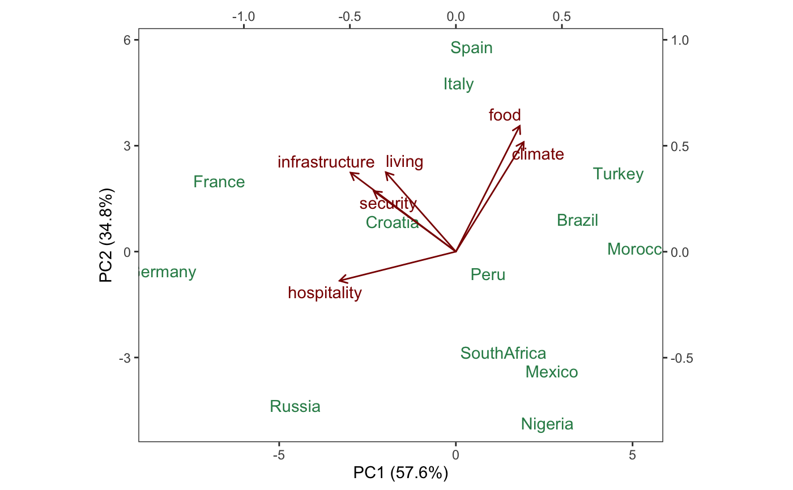
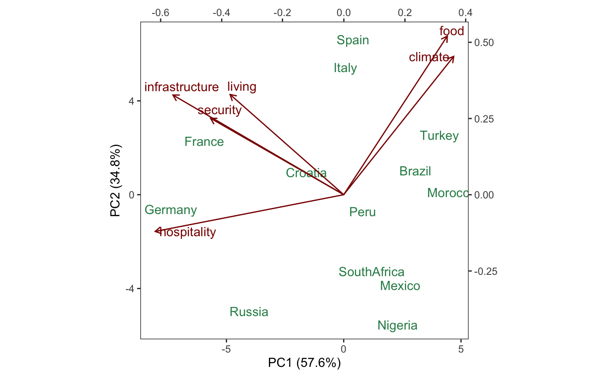
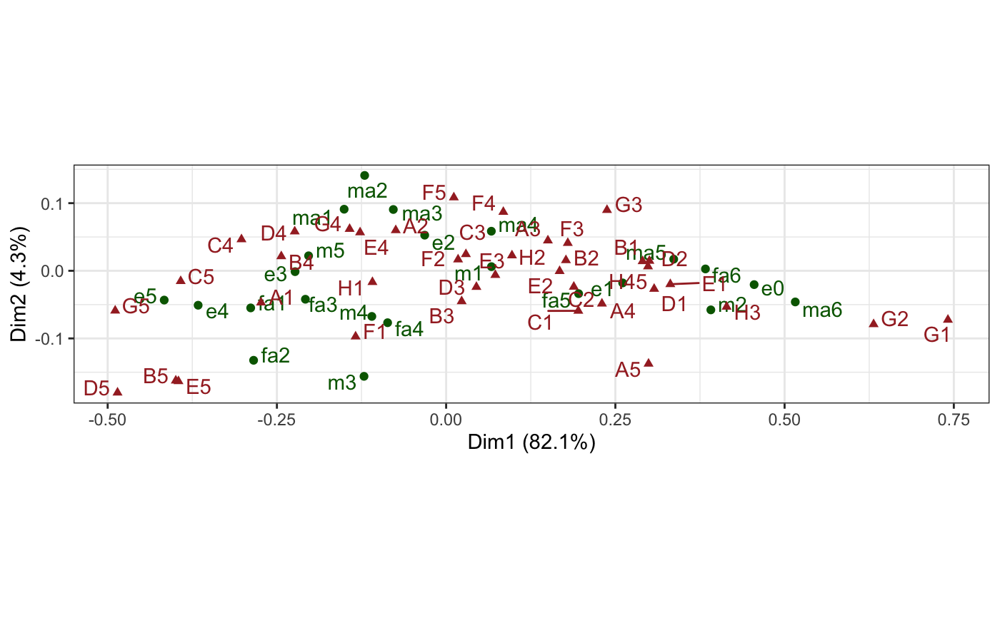
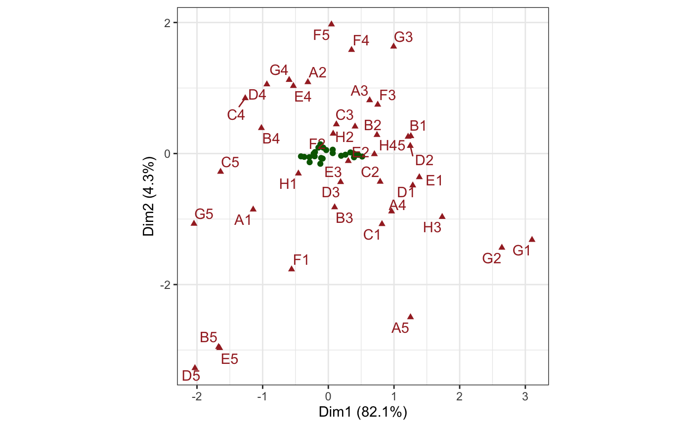
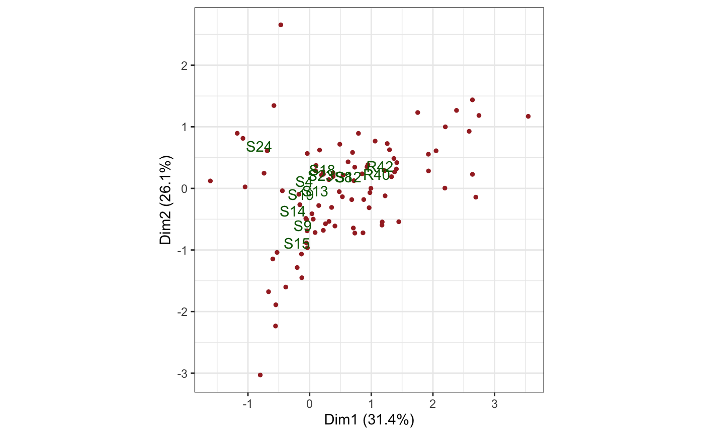
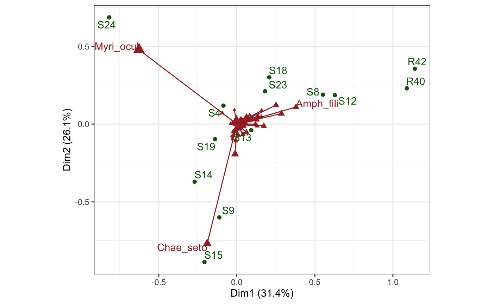

conference.RdRe-distribute inertia between cases and variables in an ordination.
recover_conference(x) # S3 method for default recover_conference(x) get_conference(x) revert_conference(x) confer_inertia(x, p)
| x | A |
|---|---|
| p | Numeric vector of length 1 or 2. If length 1, the proportion of the
inertia assigned to the cases, with the remainder |
The inertia of a singular value decomposition (eigendecomposition) consists in the squares of the singular values (eigenvalues), and represents the variance, likened to the physical inertia, in the directions of the orthogonal singular vectors (eigenvectors). Read more about conferring inertia between cases and variables at https://stats.stackexchange.com/a/141755/68743.
Note: In case the "inertia" attribute is a rectangular matrix, one may
only be able to confer it entirely to the cases (p = 1) or entirely to the
variables (p = 0).
# Confer PCA weights and inertia between cases and variables country_attributes %>% prcomp() %>% as_tbl_ord() %>% print() -> attributes_pca#> # A tbl_ord of class 'prcomp': (13 x 6) x (6 x 6)' #> # 6 coordinates: PC1, PC2, ..., PC6 #> # #> # U: [ 13 x 6 | 0 ] #> PC1 PC2 PC3 ... | #> | #> 1 0.0796 4.77 0.0922 | #> 2 0.451 5.80 1.30 ... | #> 3 -1.79 0.842 0.0145 | #> 4 3.45 0.906 0.250 | #> 5 -4.54 -4.36 -0.0156 | #> #> # #> # V: [ 6 x 6 | 0 ] #> PC1 PC2 PC3 ... | #> | #> 1 -0.331 0.375 0.00981 | #> 2 0.320 0.517 0.187 | #> 3 0.301 0.593 -0.616 ... | #> 4 -0.387 0.286 0.145 | #> 5 -0.548 -0.138 -0.661 | #> 6 -0.497 0.373 0.357 |# form biplot attributes_pca %>% ggbiplot( aes(label = .name), sec.axes = "v", scale.factor = dim_v(attributes_pca) ) + theme_bw() + theme(panel.grid = element_blank()) + geom_u_text(aes(x = PC1, y = PC2), color = "seagreen") + geom_v_vector(aes(x = PC1, y = PC2), color = "darkred") + geom_v_text( aes(x = PC1, y = PC2), color = "darkred", hjust = "outward", vjust = "outward" )# covariance biplot attributes_pca %>% confer_inertia(0) %>% ggbiplot( aes(label = .name), sec.axes = "u", scale.factor = dim_u(attributes_pca) ) + theme_bw() + theme(panel.grid = element_blank()) + geom_u_text(aes(x = PC1, y = PC2), color = "seagreen") + geom_v_vector(aes(x = PC1, y = PC2), color = "darkred") + geom_v_text_repel(aes(x = PC1, y = PC2), color = "darkred")# Confer inertia between rows and columns of CA on Spanish ISSP sample issp_women %>% ca::ca() %>% as_tbl_ord() %>% augment() %>% print() -> issp_ca#> # A tbl_ord of class 'ca': (23 x 22) x (39 x 22)' #> # 22 coordinates: Dim1, Dim2, ..., Dim22 #> # #> # U: [ 23 x 22 | 4 ] #> Dim1 Dim2 Dim3 ... | .name .mass .dist .inertia #> | <chr> <dbl> <dbl> <dbl> #> 1 0.280 0.111 0.830 | 1 m1 0.185 0.0807 0.00120 #> 2 1.64 -1.05 -1.86 ... | 2 m2 0.0272 0.413 0.00464 #> 3 -0.508 -2.84 1.14 | 3 m3 0.00712 0.321 0.000733 #> 4 -0.459 -1.23 0.0111 | 4 m4 0.0109 0.226 0.000558 #> 5 -0.850 0.403 -1.08 | 5 m5 0.103 0.214 0.00471 #> # … with 18 more rows #> # #> # V: [ 39 x 22 | 4 ] #> Dim1 Dim2 Dim3 ... | .name .mass .dist .inertia #> | <chr> <dbl> <dbl> <dbl> #> 1 -1.14 -0.854 -0.892 | 1 A1 0.0236 0.289 0.00197 #> 2 -0.311 1.09 -0.817 ... | 2 A2 0.0553 0.109 0.000651 #> 3 0.629 0.814 0.283 | 3 A3 0.00540 0.333 0.000598 #> 4 0.963 -0.883 1.79 | 4 A4 0.0355 0.255 0.00230 #> 5 1.25 -2.50 0.188 | 5 A5 0.00528 0.409 0.000884 #> # … with 34 more rows# Reproduce Exhibit 9.2 in Greenacre (2010)... issp_ca %>% confer_inertia(c(1, 1)) %>% ggbiplot(aes(label = .name)) + theme_bw() + geom_u_point(color = "darkgreen") + geom_u_text_repel(color = "darkgreen") + geom_v_point(color = "brown", shape = 17) + geom_v_text_repel(color = "brown")#> Warning: Inertias are not balanced.# Reproduce Exhibit 9.3 in Greenacre (2010)... issp_ca %>% confer_inertia("rowprincipal") %>% ggbiplot(aes(label = .name)) + theme_bw() + geom_u_point(color = "darkgreen") + geom_v_point(color = "brown", shape = 17) + geom_v_text_repel(color = "brown")# Reproduce Exhibits 9.4 and 9.6 in Greenacre (2010)... # Confer inertia in CA between rows and columns of benthic sample data benthos %>% ca::ca() %>% as_tbl_ord() %>% print() -> benthos_ca#> # A tbl_ord of class 'ca': (92 x 12) x (13 x 12)' #> # 12 coordinates: Dim1, Dim2, ..., Dim12 #> # #> # U: [ 92 x 12 | 0 ] #> Dim1 Dim2 Dim3 ... | #> | #> 1 -1.17 0.895 -0.140 | #> 2 -0.552 -2.23 -0.359 ... | #> 3 -0.0406 -0.689 0.687 | #> 4 1.22 0.287 -0.700 | #> 5 0.312 0.142 -0.137 | #> #> # #> # V: [ 13 x 12 | 0 ] #> Dim1 Dim2 Dim3 ... | #> | #> 1 -0.173 0.262 -0.376 | #> 2 1.11 0.417 1.52 ... | #> 3 -0.226 -1.33 -0.297 | #> 4 1.27 0.411 1.37 | #> 5 0.186 -0.0884 0.568 | #># Reproduce Exhibit 8.3 benthos_ca %>% confer_inertia("colprincipal") %>% ggbiplot(aes(label = .name)) + theme_bw() + geom_u_point(color = "brown", size = 1) + geom_v_text(color = "darkgreen")# Reproduce Exhibit 8.4 benthos_ca %>% augment(.matrix = "u") %>% transmute_u(mass = .mass, sqrt_mass = sqrt(.mass)) %>% confer_inertia("colprincipal") %>% ggbiplot(aes(label = .name), scale_u = "sqrt_mass") + theme_bw() + geom_u_vector(color = "brown", arrow = NULL) + geom_u_point(aes(size = mass), color = "brown", shape = 17) + scale_size_continuous(range = c(1, 4), guide = "none") + geom_u_text( stat = "chull", color = "brown", hjust = "outward", vjust = "outward" ) + geom_v_point(color = "darkgreen") + geom_v_text_repel(color = "darkgreen", min.segment.length = 2)